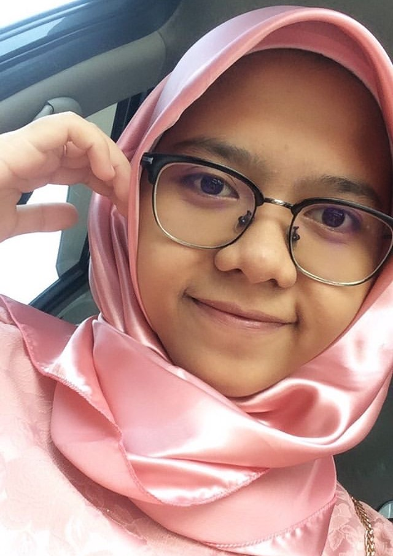
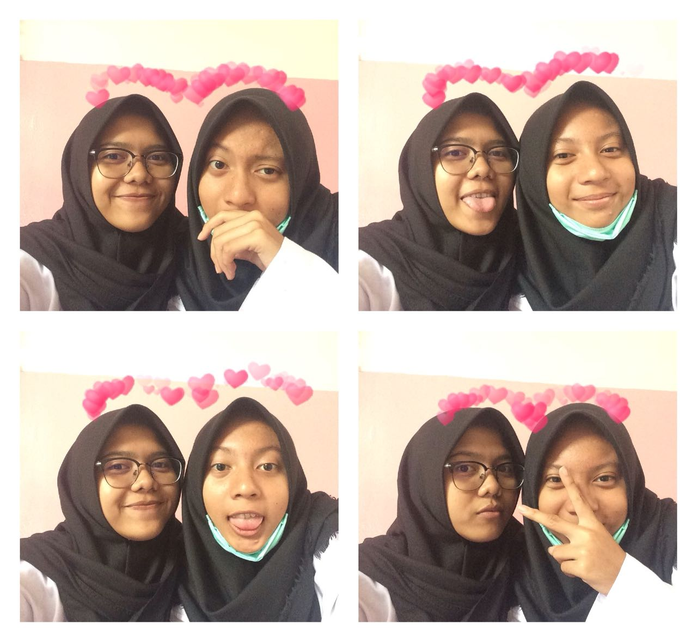

Saya Sevy Amalia Nur biasa dipanggil Sevy atau Amalia atau Sepi atau Vy atau yang lainnya. Alamat rumah saya di Jalan H Hasan Rt 001 Rw 010 No.23 Kel.Baru Kec.Pasar Rebo Jakarta Timur. Di jakarta aku tinggal bersama kedua orang tua ku. Umurku 17 tahun. Hobiku adalah membaca novel dan mengoleksi novel. Aku bersekolah di SMK-SMAK Bogor. Aku anak ke 2 dari 2 bersudara. Aku memiliki satu kakak laki-laki yang bernama Rizky Adnan. Ia berumur 25 Tahun tapi bulan april mendatang dia berumur 26 tahun hahah tua.
Sevy

Aku dengan abang ku beda 8 tahun. Aku dan abang ku mungkin memiliki kesamaan, dari segi pendidikan aku SMP di SMP Negeri 179 Jakarta yang sama sepertinya, kemudian aku melanjutkan ke SMK-SMAK Bogor dan ia pun juga bersekolah di SMK-SMAK Bogor tetapi ia sudah lulus. Ia angkatan 54 dan sekarang ia sudah bekerja tapi ia juga sambil melanjutkan pendidikannya di Universitas Muhammadiah Jakarta. Dulu waktu ia masih bersekolah di SMK-SMAK Bogor, aku sering berantem dengannya yaitu berebutan laptop sampai menyuruhnya pulang ke rumah. Setiap dia tidak pulang pas aku merindukannya sampai menanyakan ke ayah ataupun mamah. Bagaikan tiada hari tanpa berantem kalau jauh kangen.
Abang ku lulus SMK-SMAK Bogor tahun 2012 dan mudah mudahan aku juga lulus dari SMK-SMAK Bogor pada tahun 2022 Aaamiin. Aku jarang ngobrol dengannya bahkan untuk foto bersama pun jarang, sekalinya pun foto itu juga foto bersama ayah dan mamah. Ayah ku berumur 55 tahun sedangkan mamah ku berumur 48 tahun, mereka beda 7 tahun. Dengan berbeda umur yang cukup jauh tidak menghalanginya. Di gambar yang pertama ada foto ku bersama mamah ku pada saat acara pernikahan sodara ku. Sedangkan di foto yang kedua ada foto berempat bersama ayah, mamah, aku, dan abang ku pada saat liburan ke pantai. Aku di keluarga menjadi yang paling kecil dan sedikit di manja sama mamah hehe, bahkan sebelum ngekost pun selalu di cemas apakah dapat betah atau tidak.
Im really good at:
Sing
99%
Cry
99%
Reading
99%
100+
Tosca
100+
Hello Kitty
100+
Novel
100+
A esthetique
PORTFOLIO
#QOTD
When the sharpest words wanna cut me down I'm gonna send a flood, gonna drown them out.
CONTACT
SHOT LOW
AIM HIGH

Jakarta, Indonesia
Phone: 081210280387
Email: sevyamalia1@gmail.com
![Ini adalah fotoku bersama Hana, salah satu teman kosanku. Kita berdua sangat dekat, seperti adik kakak, kita sering curhat, ngerjain tugas bareng sampai begadang, main bareng, kulineran bareng, dan sering foto berdua dengan gaya yang lucu. Ini adalah salah satu bukti bawah kita sering foto bersama, foto ini pada saat acara PORSIP tahun lalu di selasar Gedung Serba Guna (GSG). Tapi kita sekarang sudah sibuk dengan kesibukannya masing-masing. Kita sudah tidak seperti dulu yang selalu menghabiskan waktu bersama, sekarang kita seperti orang yang baru pertama kali kenal dengan orang lain. Aku dan dia memiliki banyak kesamaan. Banyak sekali foto bersamanya, disetiap saat pasti kita foto berdua, tapiii untuk sekarang tidak pernah sama sekali. Dulu kita suka gila gilaan bareng kalau di kosan, sekarang tidak pernah lagi seperti itu. Aku merindukan semua, semua hal yang sering kami lakukan bersama. Aku merindukannya itu ;((](sevy5.jpg)